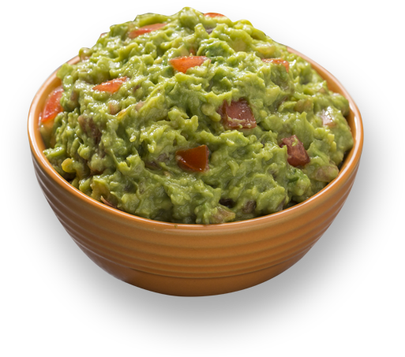

Dat Good Good Guacamole

Description
The real trick to a great guacamole recipe is to use good avocados. Make sure your avocados are ripe and of the Hass variety!
Serve this dip with corn chips or an array of fresh vegetables.
Ingredients
- 2 Avocados
- 1/2 lemon, juiced
- 2 tablespoons chopped onion
- 2 tablespoons olive oil
- 1/2 teaspoon salt
Steps
- Cut avocados into halves. Remove seeds and scoop out the pulp into a small bowl.
Use a fork to mash the avocado.
- Stir in lemon juice, onion, olive oil, and salt.
Cover the bowl and refrigerate for 1 hour before serving.